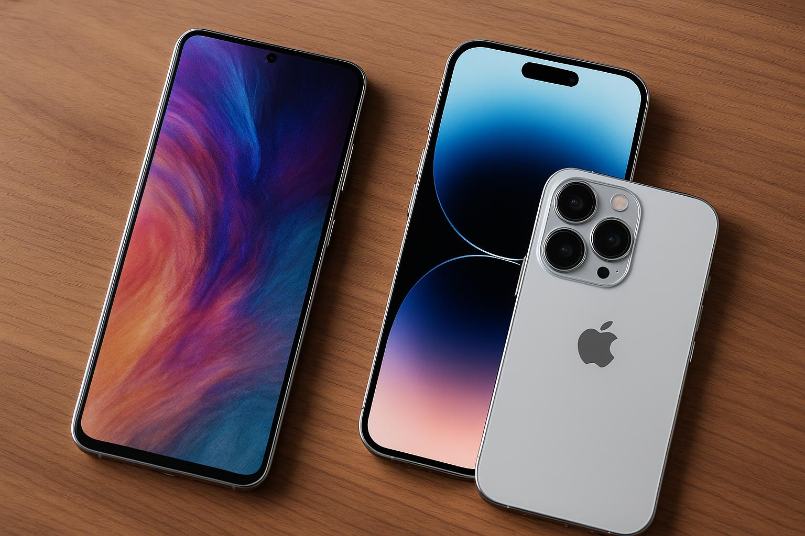
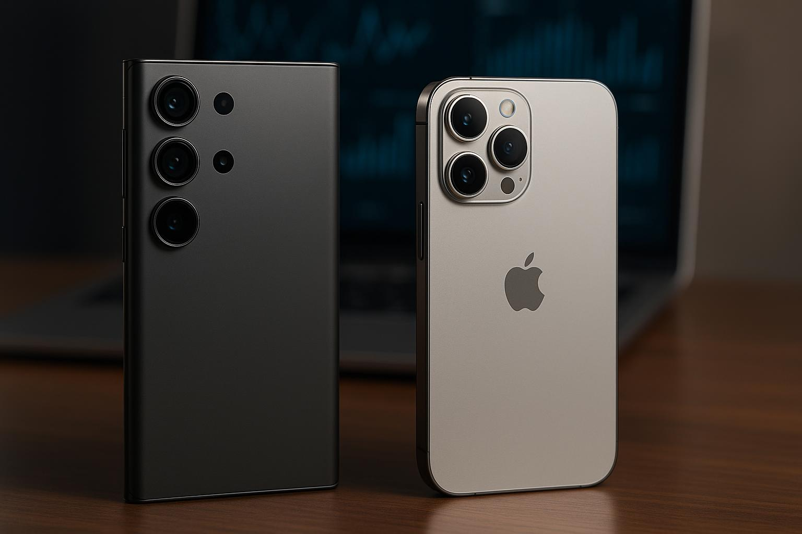
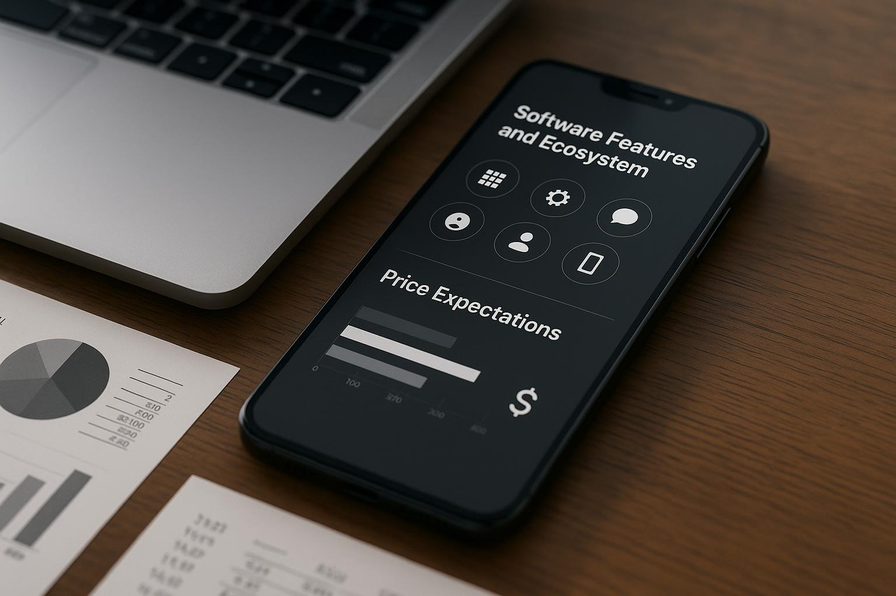
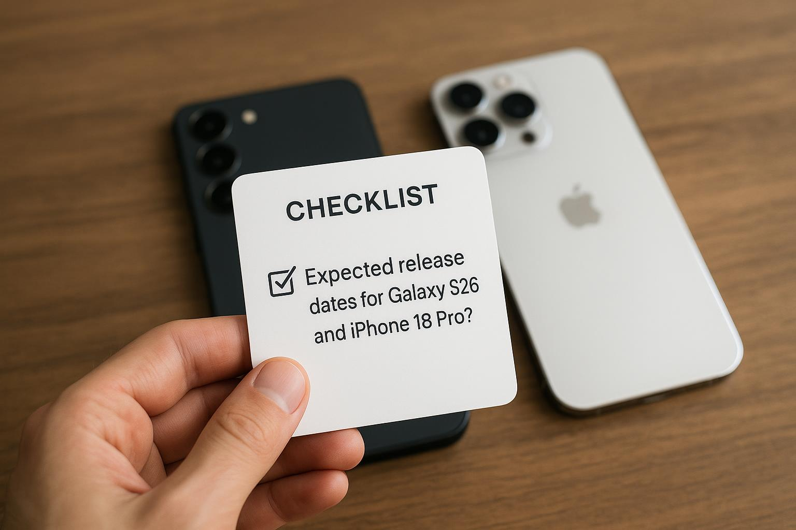
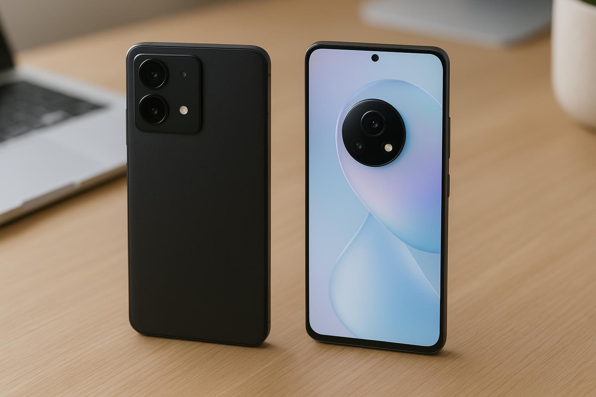

Samsung Galaxy S26 vs Apple iPhone 18 Pro: The 2026 Smartphone War – Leaks, Price, and Specs Compared
The Samsung Galaxy S26 vs Apple iPhone 18 Pro: The 2026 Smartphone War – Leaks, Price, and features will undoubtedly dominate the tech conversation in 2026. As we anticipate these flagship smartphones, it's essential to evaluate what we know so far through leaks, rumors, and expert analyses. In this article, we'll explore the key differences and similarities between these two titans, following the latest information available.

Practical Tips for Choosing Between the Samsung Galaxy S26 and Apple iPhone 18 Pro
When evaluating two premium smartphones like the Samsung Galaxy S26 and Apple iPhone 18 Pro, consider the following factors:
- Operating System: Decide whether you're more comfortable with Android or iOS. Each offers unique features and user experiences.
- Camera Performance: Look for comparisons of camera specs and performance in real-life scenarios, especially if photography is important to you.
- Battery Life: Check reviews that analyze battery longevity and charging speeds, as these can significantly impact daily usage.
- Software Support: Consider how long each manufacturer typically supports their devices with updates.
- Pricing and Value: Watch for potential pricing leaks and evaluate how much you're willing to spend for the features you desire.
Design and Display
Both the Samsung Galaxy S26 and Apple iPhone 18 Pro are expected to bring striking design choices and cutting-edge display technology. From early rumors, here's how they compare:
- Samsung Galaxy S26: Anticipated to feature a refreshed design with thinner bezels, a new color palette, and possibly an under-display camera sensor.
- Apple iPhone 18 Pro: Expected to continue with the premium glass and aluminum build, with rumors of a titanium chassis for improved durability.

Performance and Hardware
With advancements in processing power, the choice between the Galaxy S26 and the iPhone 18 Pro will hinge largely on their respective chipsets:
- Samsung Galaxy S26: Likely to feature the Exynos 2400 or Snapdragon equivalent, depending on the region, promising significant improvements in AI processing and graphics performance.
- Apple iPhone 18 Pro: Rumored to be equipped with the A18 Bionic chip, which is expected to offer unparalleled performance and efficiency.
Camera Capabilities
Both devices are anticipated to push the boundaries of mobile photography:
- Samsung Galaxy S26: Expected enhancements in zoom capabilities and low-light performance, positioning Samsung as a leader in mobile camera tech.
- Apple iPhone 18 Pro: Enhancements in computational photography and focus through improved sensors and software.

Software Features and Ecosystem
The software experience is crucial in deciding your next smartphone:
- Samsung Galaxy S26: Likely to use One UI 6, built on Android 14, offering customization and various multitasking features.
- Apple iPhone 18 Pro: Expected to ship with iOS 18, focusing on privacy enhancements and seamless integration with other Apple devices.
Price Expectations
Pricing for flagship devices generally varies based on configurations and storage options. While it's too early for official pricing, we can make some educated guesses based on previous models:
- Samsung Galaxy S26: Expected starting price around $999 for the base model.
- Apple iPhone 18 Pro: Anticipated price starting from $1,099, reflecting the premium features and build quality.

Quick Checklist
To help streamline your decision-making process, consider this quick checklist:
- Which operating system are you more comfortable with? Android or iOS?
- How essential is camera quality in your daily life?
- What specifications are most important to you, such as battery life or processing speed?
- Are you interested in unique design elements or materials?
- What is your budget for your next smartphone?
FAQ
1. What are the expected release dates for the Galaxy S26 and iPhone 18 Pro?
While specific dates haven't been confirmed, the Galaxy S26 is expected to release in early 2026, likely around February, while the iPhone 18 Pro is anticipated in September 2026.
2. Will both smartphones have 5G connectivity?
Yes, both the Samsung Galaxy S26 and Apple iPhone 18 Pro are likely to support 5G networks, offering faster download and streaming speeds.
3. What are the battery capacities of these devices?
Though not officially confirmed, the Galaxy S26 may have a battery capacity between 4,500mAh to 5,000mAh, while the iPhone 18 Pro might feature a battery around 3,600mAh, optimized for efficiency.
4. Are there any rumors about new features unique to each phone?
Rumors suggest that the Galaxy S26 may include a revamped S Pen experience, while the iPhone 18 Pro could introduce enhanced AR capabilities with new sensors.

5. Can I find reliable comparisons between these two smartphones closer to their launch dates?
Yes, as launch dates approach, reputable tech sites will likely provide in-depth comparisons and real-world testing reviews to help you make an informed decision.
Stay tuned to our blog for continuous updates on the 5 Things About Vivo’s next phone alongside other exciting launches in 2026. For additional productivity tools to enhance your daily workflow, check out The Best Productivity Apps We've Tested for 2026 - PCMag.
Related on MingMong: 5 Things About Vivo’s next phone will launch with a professional camera rig (2026) and The Best Productivity Apps We've Tested for 2026 - PCMag.
Source: Link